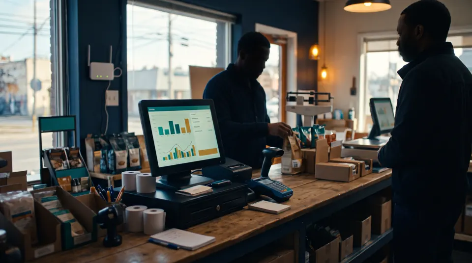

Série em três partes
A Engenharia do Choque Controlado
Uma crise pode paralisar uma fronteira, interromper um serviço ou encurtar o prazo para uma decisão. Depois, surgem contratos, sistemas, consultorias e novas regras para responder ao problema. Esse encadeamento merece investigação — mas não prova, por si só, que alguém tenha planejado a crise.
Esta série parte de uma pergunta mais verificável: quando uma infraestrutura falha ou uma regra muda, quem suporta o custo imediato, quem controla as informações e como se decide se a resposta proposta é proporcional? A expressão “choque controlado” funciona aqui como provocação editorial sobre a gestão da urgência, não como afirmação de que apagões, gargalos ou reformas tenham sido deliberadamente fabricados.
O percurso vai de um caso documentado de preparação para a nova fronteira britânica, passa pela transição tributária brasileira e termina no desenho do software que atende o pequeno comércio. Em cada parte, separamos o que a fonte permite afirmar do que permanece hipótese; não atribuímos intenção, culpa ou ganho a empresas sem evidência específica.

Parte I · 14/11/2026
A Arquitetura da Urgência
O que um relatório sobre a fronteira britânica comprova — e o que não comprova — sobre gargalos e mercados de resposta.

Parte II · 14/11/2026
O Nevoeiro Tributário
A reforma do consumo, seu cronograma de transição e o cuidado necessário para falar de split payment e caixa.

Parte III · 14/11/2026
Soberania Operacional no Balcão
Como continuidade local, visibilidade e limites honestos de integração ajudam a proteger a operação do varejo.
Dicionário de termos técnicos e de negócios
Conceitos que ajudam a acompanhar as três partes:
- Gargalo
- É o ponto que não consegue atender todos ao mesmo tempo. A fila aparece ali.
- Transição tributária
- É o período em que as regras antigas são trocadas pelas novas. Nesse tempo, cada empresa precisa saber qual regra vale para cada venda.
- Offline-first (prioridade para funcionar sem internet)
- É quando o sistema guarda os dados principais no computador da loja e consegue fazer algumas tarefas sem internet. Pagamentos e notas fiscais ainda podem depender de serviços externos.
Nota: Ensaio de engenharia e análise institucional. “Choque controlado” é uma lente para examinar a resposta à urgência, não uma conclusão sobre conspiração ou intenção.